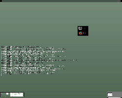
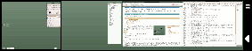
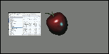
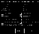

E16
Archivierte Anleitung
Dieser Artikel wurde archiviert, da er - oder Teile daraus - nur noch unter einer älteren Ubuntu-Version nutzbar ist. Diese Anleitung wird vom Wiki-Team weder auf Richtigkeit überprüft noch anderweitig gepflegt. Zusätzlich wurde der Artikel für weitere Änderungen gesperrt.
Zum Verständnis dieses Artikels sind folgende Seiten hilfreich:
 E16 ist ein Fenstermanager mit Geschichte. Die im Jahre 2000 entstandene Version E16 (auch DR 16), die zeitweise als Fenstermanager für GNOME diente, ist nicht zu verwechseln mit der Neuentwicklung E17, denn E16 wird parallel weiterentwickelt bzw. gepflegt. Charakteristisch sind jedoch bei beiden Versionen die reichhaltigen Grafikelemente und die hohe Konfigurierbarkeit und Performance. Außerdem gibt es für die Desktop-Umgebung Enlightenment besonders angepasste Software wie beispielsweise Eterm.
Installation¶
E16 kann bis Ubuntu 11.04 aus den offiziellen Paketquellen genutzt werden, indem das folgende Paket installiert [1] wird:
e16 (universe)
 mit apturl
mit apturl
Paketliste zum Kopieren:
sudo apt-get install e16
sudo aptitude install e16
Alternativ kann von der Projektseite  eine letzte verfügbare Version heruntergeladen, entpackt [3] und kompiliert werden.
eine letzte verfügbare Version heruntergeladen, entpackt [3] und kompiliert werden.
Der Startbefehl, z.B. für einen Displaymanager, lautet e16.
Benutzung¶
 Zu Beginn befindet sich links unten der Pager, die Position kann jedoch frei gewählt werden. In ihm werden die geöffneten Fenster auf den virtuellen Desktops verkleinert abgebildet. Mit gedrückter linker Maustaste kann ein Fenster bewegt werden. Die mittlere Maustaste vollzieht einen Wechsel auf den angeklickten Desktop. Der rechte Mausklick auf eine Anwendung öffnet ein kleines Menü, mit dem (sozusagen aus der Ferne) Fenster z.B. minimiert ("Iconify") und geschlossen werden können. Klickt man jedoch auf eine freie Fläche, kann auf pagerspezifische Einstellungen zugegriffen werden.
 Auf der rechten Seite findet sich anfangs eine Iconbox. Minimierte Anwendungen werden dort als kleine Voschaubilder angezeigt. Ein Linksklick auf ein Vorschaubild lässt die Anwendung wieder auf den Desktop zurückspringen, ein Rechtsklick öffnet das Menü. So können auch zusätzliche Iconboxen erstellt werden, wie beim Pager ist die Position frei wählbar.
Konfiguration¶
Hinweis:
Bei der Konfiguration sollte man immer beachten, dass E16 nicht mit deutschen Umlauten zurechtkommt.
Menüs¶
Alle drei Maustasten sind mit Menüs belegt. Auf der rechten Maustaste liegen die Einstellungen. Die mittlere Maustaste zeigt das Hauptmenü, inklusive dem bei der Installation automatisch erstellten Debian-Menü aller installierten Programme. Auf der linken Maustaste liegt normalerweise das usermenu. Dieses wird aber bei der Installation nicht automatisch angelegt. Um es zu erstellen, muss im eigenen Homeverzeichnis die Datei ~/.enlightenment/file.menu angelegt werden [4]. Die Syntax lautet:
"Menüname" "Menüeintragname" Iconname exec Programmaufruf
Ist die Datei erst einmal erstellt und ein Menüname eingetragen, kann man auch die grafischen Tools
e16menuedit (universe)
e16menuedit2 (universe)
mit apturl
Paketliste zum Kopieren:
sudo apt-get install e16menuedit e16menuedit2
sudo aptitude install e16menuedit e16menuedit2
benutzen, um das Menü zu verwalten (vorher funktionieren sie nicht!). Beim Menü muss man zusätzlich beachten, dass Änderungen erst nach etwas Wartezeit oder einem Designwechsel wirksam werden.
Tastaturkürzel¶
Enlightenment bietet wie annähernd jeder Fenstermanager die Möglichkeit, Aktionen per Tastenkombination durchzuführen. So kann z.B. standardmäßig mit ⇧ + Alt + → auf den nächsten (virtuellen) Desktop weitergeschaltet werden. Um diese Aktionen zu konfigurieren, ist das Programm
e16keyedit (universe)
mit apturl
Paketliste zum Kopieren:
sudo apt-get install e16keyedit
sudo aptitude install e16keyedit
erforderlich.
Virtuelle Desktops¶
In E16 kann man mehrere Desktops mit mehreren virtuellen Desktops haben. Über das Einstellungsmenü kann im Punkt "Multiple Desktop Settings" die Anzahl der Desktops und im Punkt "Virtual Desktop Settings" die jeweilige Anzahl der virtuellen Desktops angelegt werden. So ist es beispielsweise möglich, zwei Systeme mit jeweils 2x4 virtuellen Desktops zu nutzen.
Programmspezifische Einstellungen¶
 Um ein Programm automatisch zu starten bzw. einem Programm eine bestimmte Position zuzuweisen, gibt es die "Remember"-Funktion. Statt also beispielsweise per Devil's Pie ein Regelwerk zu definieren, genügt es, im Rechtsklickmenü der Fensterleiste "Remember..." auszuwählen und dort die gewünschten Attribute zu speichern.
Pager¶
Das Pagermenü kann man über das generelle Einstellungsmenü oder per Rechtsklick auf den Pager aufrufen. Die wichtigste Einstellung dort ist der "Pager scanning speed": Damit das Einscannen der Schnappschüsse flüssig geschieht, seien hiermit mindestens 100 lines per second empfohlen. Außerdem kann in diesem Menü die Funktion der Maustasten beim Klick auf den Pager umgestellt und neben diversem anderem natürlich auch eingestellt werden, ob überhaupt Schnappschüsse der Desktops gemacht werden sollen.
Aussehen¶
 Übersichtsartikel
Übersichtsartikel- Erstellt mit Inyoka
-
 2004 – 2017 ubuntuusers.de • Einige Rechte vorbehalten
2004 – 2017 ubuntuusers.de • Einige Rechte vorbehalten
Lizenz • Kontakt • Datenschutz • Impressum • Serverstatus -
Serverhousing gespendet von